Note sur l'Environnement de Travail
Ce TP a été réalisé sur une instance AWS EC2. Le passage au Cloud a été motivé par des limitations techniques sur l'hôte physique, garantissant ainsi un environnement de conteneurisation stable et performant.
3.0Préparation et Accès SSH
Avant d'établir la connexion, il est impératif de sécuriser la clé privée (.pem) pour respecter les exigences du protocole SSH sous Linux.
3.0.1 Sécurisation de la clé privée

[Capture : Application des permissions chmod 400 sur la clé AWS]
3.0.2 Connexion à l'instance EC2
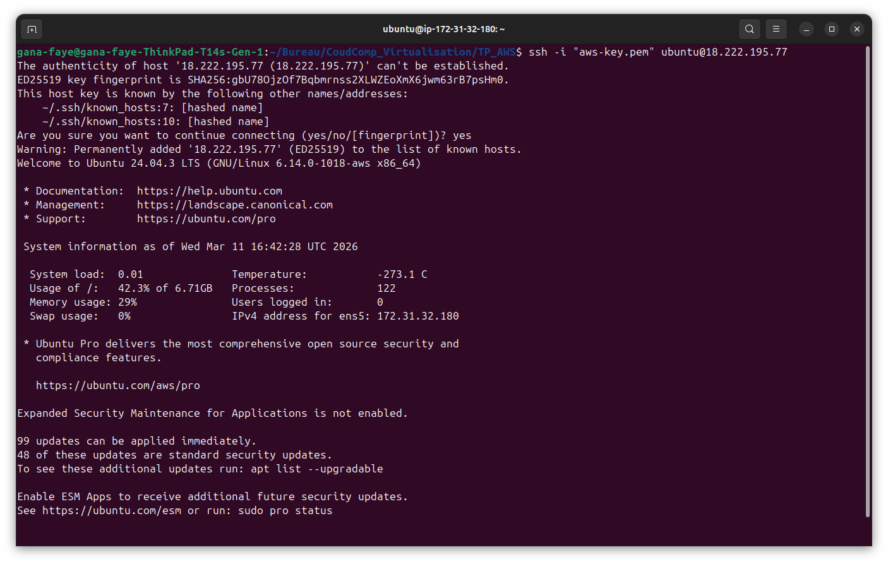
[Capture : Connexion SSH réussie après sécurisation de la clé]
Partie 3 — Prise en main de Docker
3.1Installation du moteur Docker
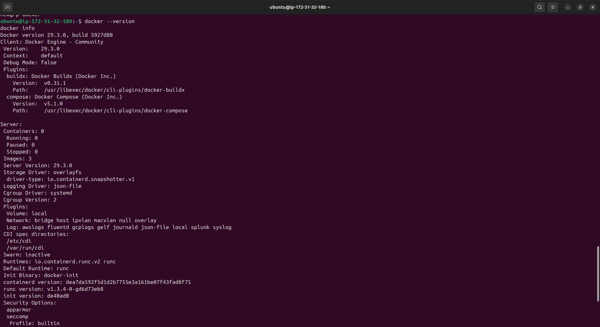
[Capture : Sortie de la commande docker info sur l'instance AWS]
/var/lib/docker.
3.2Cycle de vie : Hello World
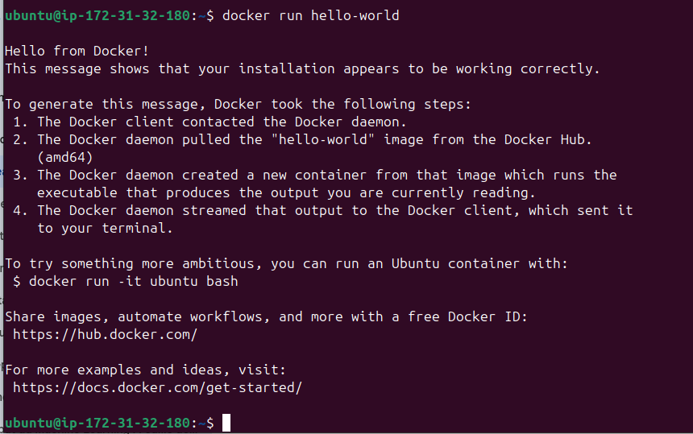
[Capture : Premier conteneur lancé avec succès]
Premier conteneur et Cycle de Vie
Exécution du conteneur de test hello-world et manipulation de son état (Arrêt, Redémarrage, Suppression).
docker ps -a
docker start [ID_CONTENEUR]
docker rm [ID_CONTENEUR]
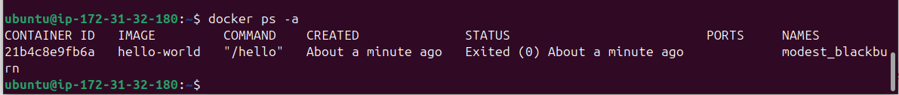
[Capture : Observation des états du conteneur via docker ps -a]
- docker ps -a : Permet de lister tous les conteneurs, y compris ceux qui sont arrêtés (statut
Exited). Contrairement àdocker psseul, cette commande est indispensable pour retrouver un conteneur qui a fini sa tâche. - docker start [id] : Relance un conteneur existant sans recréer une nouvelle instance à partir de l'image. Le processus principal est réexécuté.
- docker rm [id] : Supprime définitivement le conteneur et sa couche d'écriture (RW Layer). C'est une étape cruciale pour libérer les ressources sur le serveur AWS.
3.3Exploration des images et couches OCI
Analyse de la structure de l'image ubuntu:22.04 et observation du système de couches (layers).
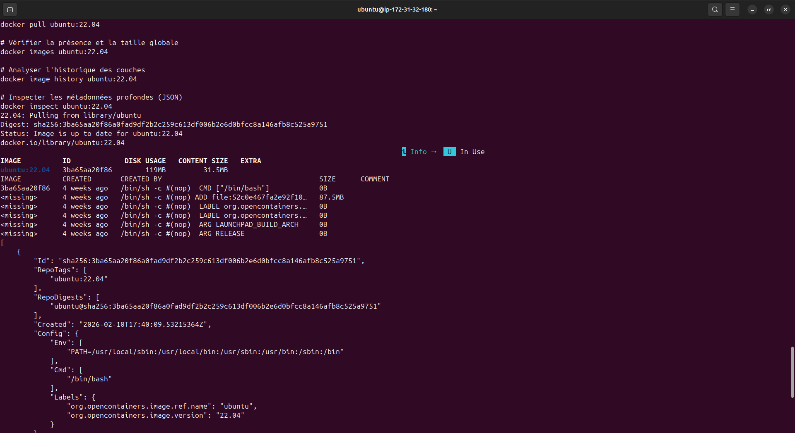
[Capture : Analyse des couches et métadonnées sur AWS]
(a) Combien de couches possède l'image ubuntu:22.04 ?
D'après le
RootFS.Layers de l'inspection JSON, l'image possède 1 seule couche de données réelle (SHA256: 6b7908e4...). Les autres lignes vues dans l'historique sont des couches de métadonnées (instructions de configuration) de 0B.
(b) Quelle est sa taille totale ?
La taille réelle sur le disque (Content Size) est de 31.5 Mo. On remarque que l'utilisation disque totale (Disk Usage) peut monter à 119 Mo selon le système de fichiers, mais le contenu effectif reste très léger par rapport à une VM.
(c) Pourquoi des couches immuables ?
Le stockage en couches immuables permet la mutualisation.
- Stockage : Si je crée plusieurs conteneurs basés sur Ubuntu 22.04, la couche de base n'est stockée qu'une seule fois.
- Téléchargement : Lors d'une mise à jour, Docker ne télécharge que les couches modifiées, optimisant ainsi la bande passante sur le réseau AWS.
Dockerfile et Images
3.4Création d'un Dockerfile et construction d'image
Mise en place d'une application Python conteneurisée sur le port 8080 en utilisant une image de base Ubuntu.
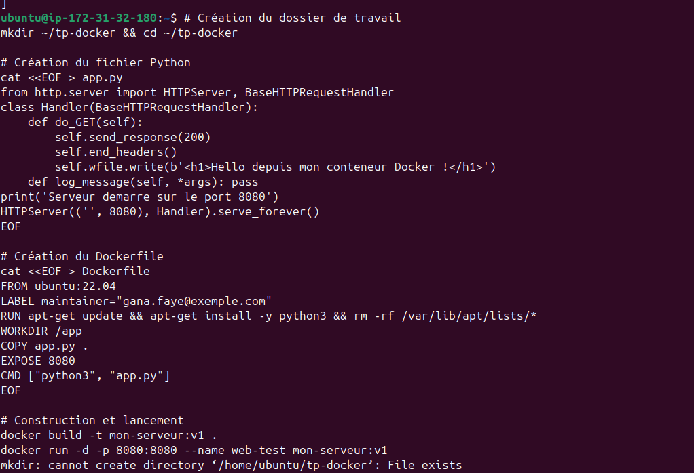
[Capture : Étapes du build et réponse du serveur Python]
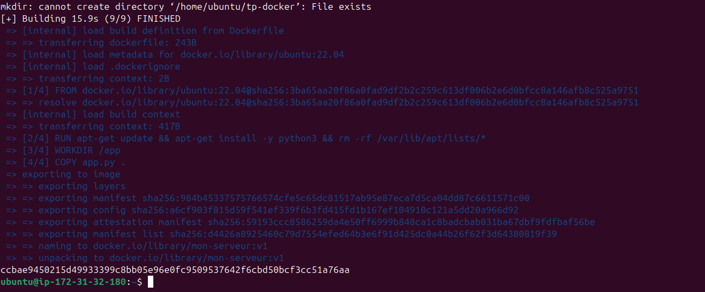
[Capture : Étapes du build et réponse du serveur Python]
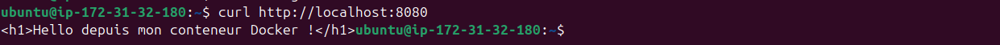
[Capture : Étapes du build et réponse du serveur Python]
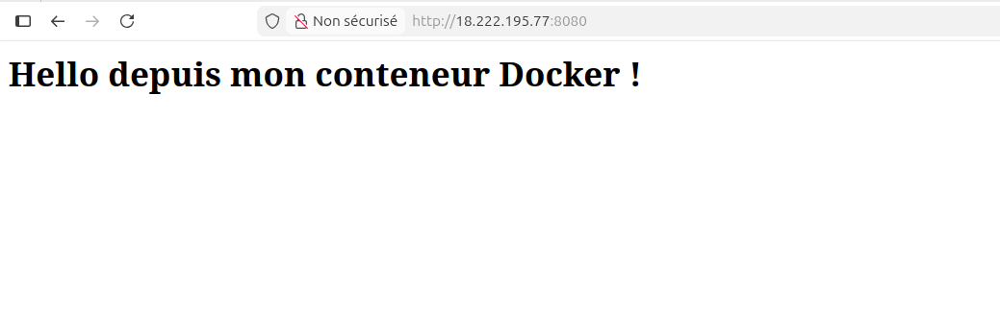
[Capture : Étapes du build et réponse du serveur Python]
Le build a ajouté 5 couches supplémentaires au-dessus de l'image de base, correspondant aux instructions :
LABEL, RUN, WORKDIR, COPY et CMD. Chaque instruction dans un Dockerfile crée une nouvelle couche d'image.
(b) Modification de app.py et nouveau build :
Si l'on modifie uniquement
app.py, Docker utilise son mécanisme de cache pour les premières étapes. Les couches FROM, LABEL, RUN et WORKDIR ne sont pas recalculées. Seule la couche COPY app.py . et les suivantes sont reconstruites. Cela permet un gain de temps considérable lors du développement.
(c) Quelle directive définit la commande de démarrage ?
Il s'agit de la directive
CMD (dans notre cas : ["python3", "app.py"]). Contrairement à RUN qui s'exécute pendant la construction, CMD n'est exécutée qu'au lancement du conteneur.
3.5Isolation des Namespaces
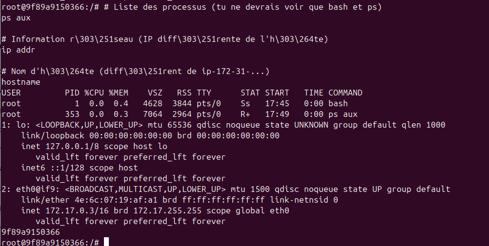
[Capture : Vue interne - PID 1 et IP 172.17.0.3]
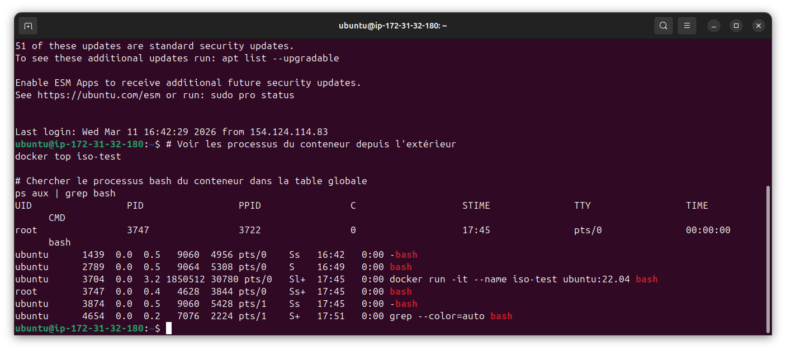
[Capture : Vue externe - PID 3747 identifié sur l'hôte]
bash se croit seul avec le PID 1. Cependant, sur l'hôte AWS, on voit qu'il s'agit du PID 3747. L'adresse IP interne (172.17.0.3) est également isolée de celle de l'instance (172.31.32.180).
(b) Mécanisme : Cette isolation est possible grâce aux Namespaces du noyau Linux qui segmentent les ressources système (PID, NET, UTS, MOUNT).
(c) Commande : La commande
ps aux | grep bash exécutée sur l'hôte permet de lever le voile sur cette isolation.
3.7Persistance des données avec les volumes
Démonstration du cycle de vie indépendant des données grâce aux volumes Docker.
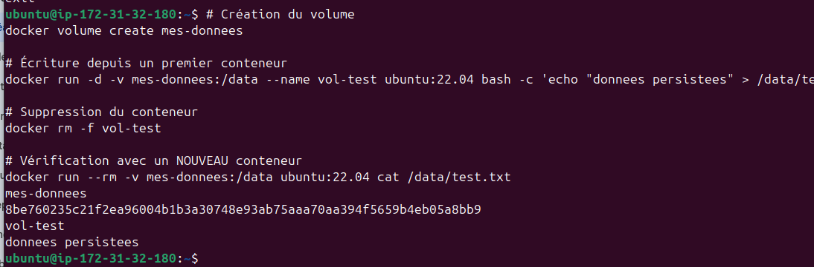
[Capture : Lecture réussie du fichier depuis un second conteneur après suppression du premier]
test.txt est toujours présent. Bien que le conteneur initial ait été supprimé, les données sont stockées dans le volume mes-donnees sur l'hôte AWS. Le volume survit à la destruction du conteneur.
(b) Volume vs Bind Mount :
- Volume : Géré par Docker dans son espace dédié (
/var/lib/docker/volumes/). Plus performant et portable entre conteneurs. - Bind Mount : Montage d'un dossier arbitraire de l'hôte (ex:
/home/ubuntu/tp). Dépend de la structure de fichiers de la machine hôte.
(c) Cas d'usage : J'utiliserais un volume pour une base de données (PostgreSQL) car Docker gère les permissions et les sauvegardes. J'utiliserais un bind mount pour le développement (code Python/React) afin de voir mes modifications en temps réel sans reconstruire l'image.
Partie 4 — Standards OCI
4.1Inspection d'une image OCI
Extraction et analyse des métadonnées de l'image alpine au format OCI.
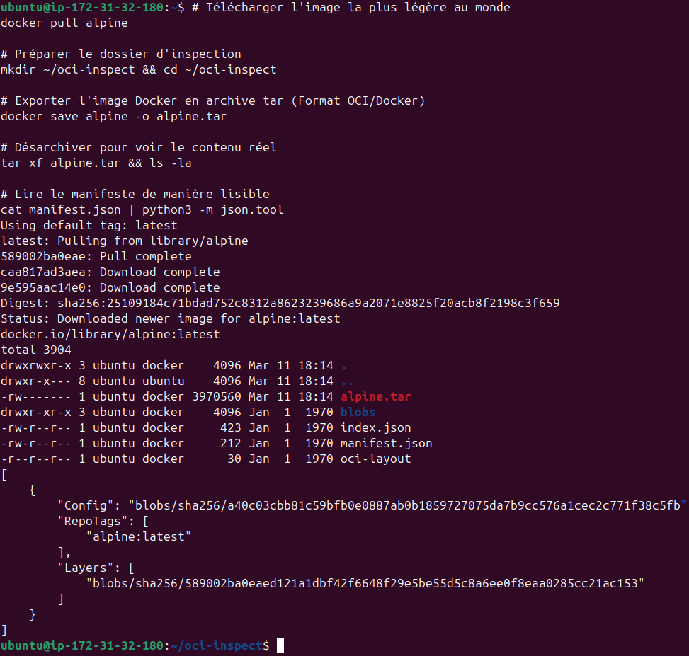
[Capture : Structure interne de l'image Alpine et manifest.json]
manifest.json, on voit que le tableau "Layers" ne contient qu'une seule entrée (blobs/sha256/589002ba...). L'image Alpine ne possède donc qu'une seule couche.
(b) Rôle du champ sha256 : Le
sha256 (visible dans le champ Config et Layers) est l'identifiant unique du contenu. C'est un hash cryptographique qui représente l'état exact des fichiers à un instant T.
(c) Garantie technique : Ce système (Content Addressable Storage) garantit l'immuabilité. Lors du téléchargement, Docker vérifie que le hash des données reçues correspond exactement à celui annoncé dans le manifeste. Si un seul bit est corrompu ou modifié par un attaquant, le hash change et Docker rejette l'image.
Conclusion du TP
La réalisation de ce TP sur AWS a permis de valider les compétences de déploiement et d'administration à distance via SSH, tout en approfondissant la maîtrise des mécanismes internes de Docker (Namespaces, Cgroups) et des standards OCI.